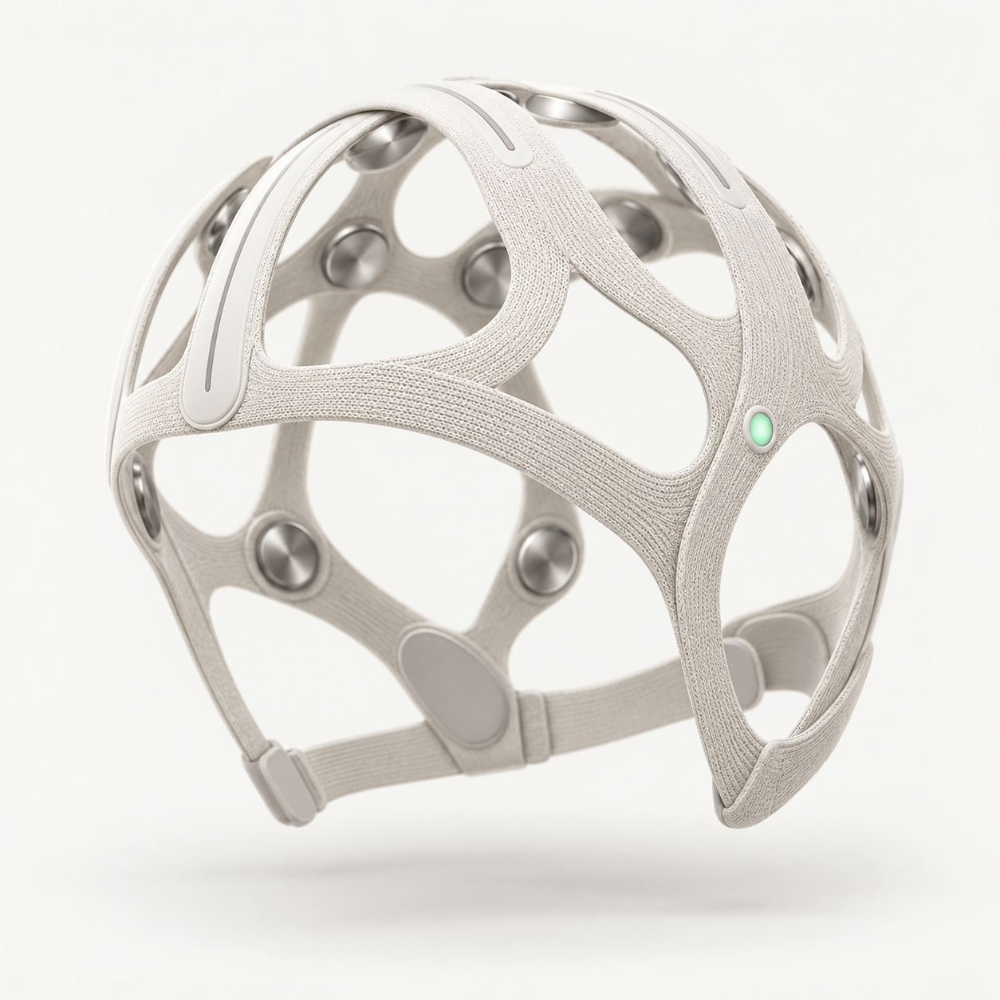

觉得更久
同样的客观时长，被体验或判断为更长。
主观时长一顶脑电帽。一个可适应的虚拟世界。一种关于时间的新可能。
↓「慢时域」设想用头皮 EEG 估计与时间体验相关的状态，再调整虚拟环境中的事件节奏、注意线索与新奇性，寻找适合个人的时间扩展体验。
画作的细节、声音与叙事，在脑电反馈下为你编排。目标是在同样的停留时间里，让这一刻主观上更充盈、更悠长。
同样的客观时长，被体验或判断为更长。
主观时长分辨间隔更短的事件，属于时间分辨率。
视觉时间分辨率软件降低运动速度，是可直接实现的操作。
场景运动速度三种观察一刻感觉有多久、细节看得有多清、场景动得有多快，分别记录，才看得清变化。
一个演示环境减速，
一个探索主观时长判断。
看一组依次出现的图形。
最后一个，会感觉更久吗？
Tse 等人发现，序列中低概率出现的刺激，即使与常见刺激持续时间相同，也倾向于被判断为更长。结果支持注意转向参与主观时长的扩展。
Tse 等，2004 · 阅读原文 ↗实际更短，却被感觉为一样长。
两者在平均判断中达到主观等长。
这组数字来自原论文。上方是等时图形的课堂体验。
它与慢时域的关系这项研究启发我们，用注意线索设计虚拟环境。下一步，加入脑电反馈，看看能否找到适合每个人、可以重复进入的慢时间体验。
点击围绕「慢时域」的论文，
看看这个想法从何而来。
时间感知研究
连接脑电与沉浸式体验

头皮采集 · 无需植入采集与校准 · EEG 记录头皮电位，你的回答记录主观时长。课件第 13、14 页提供采集—解码—反馈闭环与非侵入式技术基础。
能否把偶发的时间错觉，变成可重复、可退出、对个人有效的主动体验？
在相同停留时长内，探索个体化叙事与感官线索，是否使体验更充盈。记住多少细节，要另行测量。
在虚拟雨滴、舞蹈或音乐里，自主探索时间感的变化。用户可以随时回到正常节奏。
比较不同情境下的时长判断与 EEG 线索，逐渐找到适合自己的场景和反馈节奏。
随机比较个体 EEG 闭环、同样刺激的预设播放，以及错配反馈。控制场景速度和提示，尽量减少期待差异。
分别记录时长估计、时间流逝感与视觉分辨表现。如果还想了解反应速度和理解能力，就加入对应的任务。
提前确定评价指标，换一天、换一组人再试。重点比较脑电反馈与预设播放的效果，看看脑电究竟带来了多少改变。
自愿进入 · 随时退出 · 数据尽量本地处理 · 温和的感官体验 · 在安全的虚拟场景中探索
参考用户提供的房钰棋《连接大脑：脑机接口的过去、现在与未来》：第 11 页脑电频段，第 13 页反馈闭环，第 14 页非侵入式信号限制，第 88 页可穿戴采集。这些内容构成脑电采集与反馈的技术基础。“慢时域”希望在此之上，探索时间体验的变化。
现有结果多来自实验室里的短时任务。接下来需要分辨脑电中的注意、运动与刺激因素，再观察体验能维持多久、换一天是否有效、佩戴是否舒适。本方案通过头皮 EEG 采集状态，用虚拟环境提供反馈。
慢时域 CHRONO · 一个大胆、但接受检验的脑机接口构想。